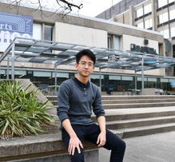
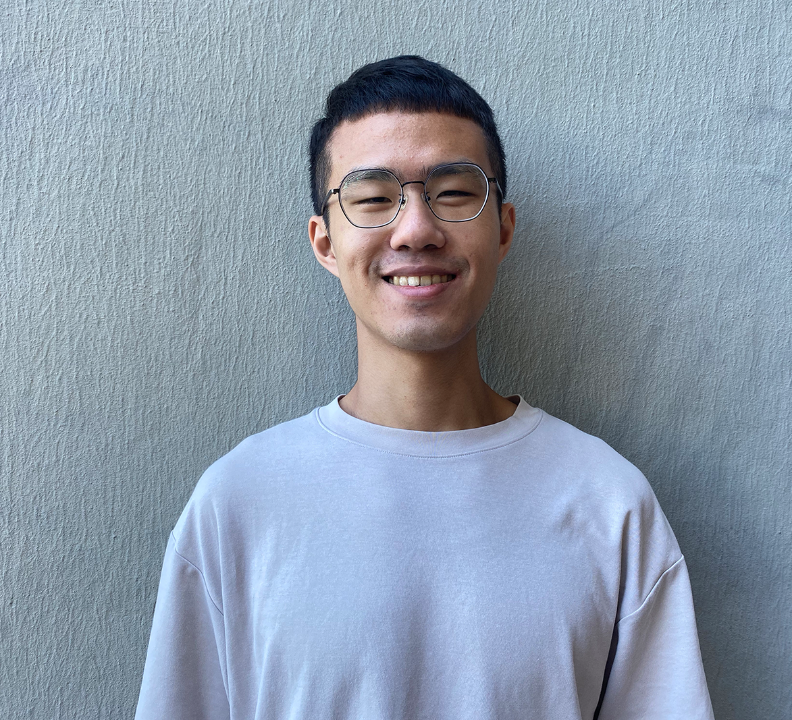
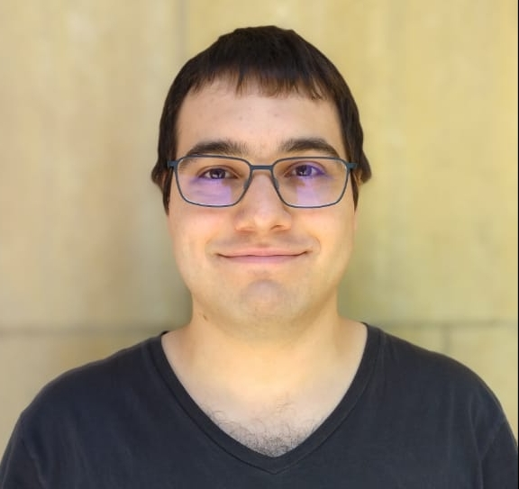

Instructor
Adam Lucas
alucas AT berkeley DOT edu
Adam did his BS in Chemistry at McGill University and his Ph.D in Mathematics (representation theory) at MIT. He was a NIH research fellow at UCSF in the area at protein folding and is a continuing lecturer in the Statistics department since 2015. Adam enjoys freestyle windsurfing.
OH:
- M 11 AM - 12 PM, W 11 - 1 PM @ SLC
GSIs

M 4-6 pm @ SLC
F 4-6 pm @ Virtual SLC
Neo Yin
yinzhang AT berkeley DOT edu
Hi everyone! My name is Neo and I’m a first-year Statistics PhD student. Outside of studying, teaching and doing research, I love to gym, play games (board games and video games) and dance. Feel free to reach out if you have questions, comments, smart remarks, jokes, memes, or greetings. Looking forward to working with you through Spring 2023.
Sections:
- TuTh 4-5 pm @ Evans 332
- TuTh 5-6 pm @ Evans 332
OH:

Th 3-5 pm @ SLC
F 3-5 pm @ Virtual SLC
Hsiang-Chuan Sha
hsiangchuan_sha AT berkeley DOT edu
Hi everyone, I'm currently a MA student in statistics.
Sections:
- TuTh 11-12pm @ Evans 332
- TuTh 12-1pm @ Evans 334
OH:

M 10-1 pm @ SLC
F 12-1 pm @ Virtual SLC
Gabriel Raposo
raposo AT berkeley DOT edu
Hello, my name is Gabriel. I'm a second year PhD student at the stats department. Besides academics I enjoy reading, playing video games and trying new foods.
Sections:
- TuTh 9-10am @ Evans 334
- TuTh 10-11am @ Evans 332
OH:
Nicholas Liskij
nliskij AT berkeley DOT edu
I'm a second year PhD student in the statistics depatment. Previously, I completed a BS and an MA in math at UCLA. In my free time, I enjoy hiking.
Sections:
- TuTh 9-10am @ Evans 332
- TuTh 1-2pm @ Evans 334
OH:
Mriganda Basu Roy Chowdhury
mriganka_brc AT berkeley DOT edu
Mriganka is a second year PhD student in statistics.
Sections:
- TuTh 11-12pm @ Evans 332
- TuTh 2-3pm @ Evans 332
OH:
Taejoo Ahn
taejoo_ahn AT berkeley DOT edu
Taejoo is a PhD student in statistics.
Sections:
- TuTh 2-3pm @ Evans 334
- TuTh 3-4pm @ Evans 332
OH: